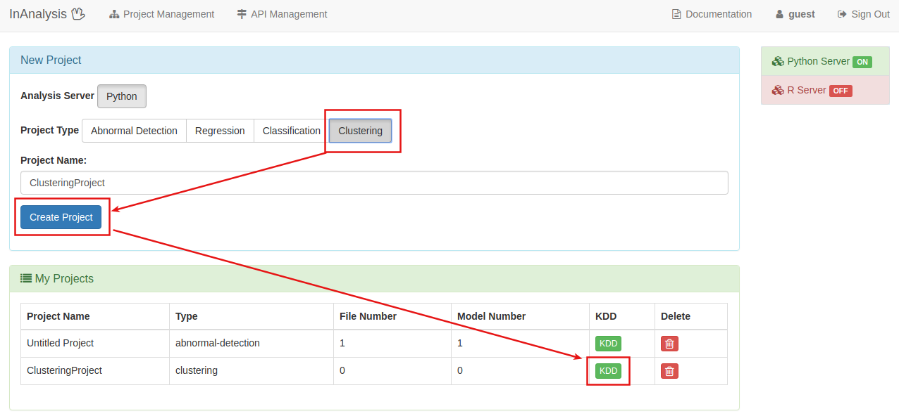
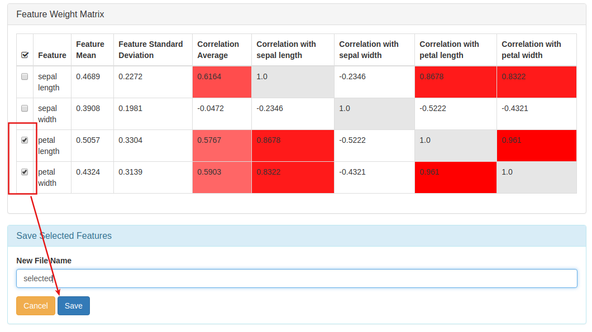
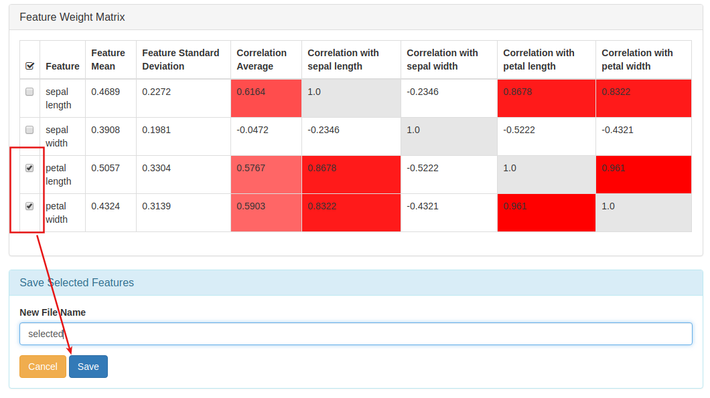
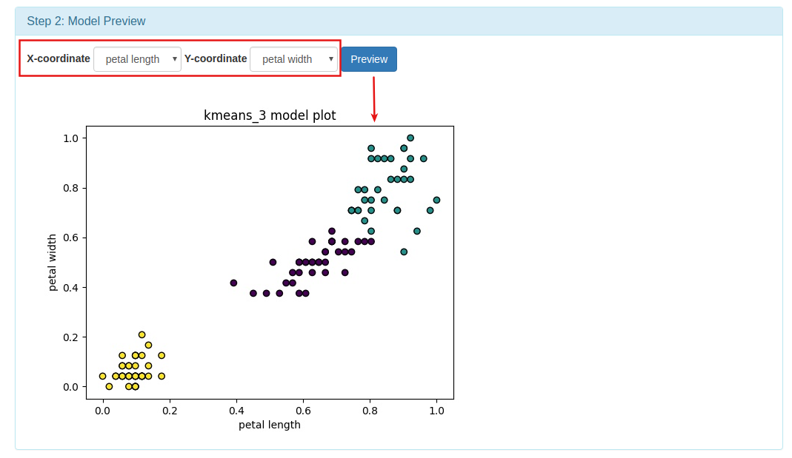
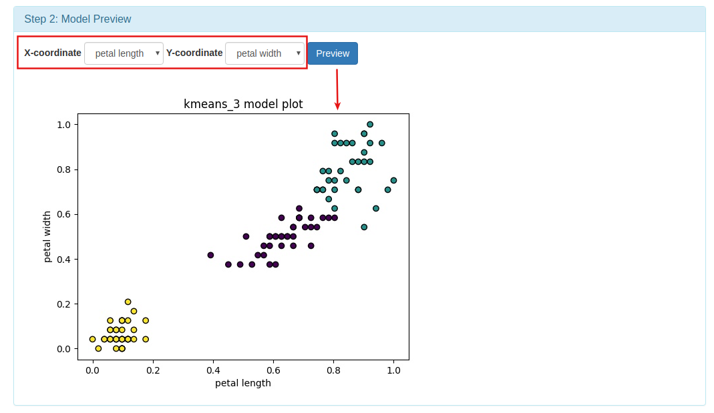

Introduction
群聚（Cluster）是一群資料項目（data objects），而分群（Clustering）這個動作是把資料依相似性分成幾個群聚
，同一群聚內資料相似愈相似愈好，不同群聚之間的資料差異越大越好。
分群是非監督式（Unsupervised）學習，無預先設好的類別標籤。
常見的應用為：了解資料分佈的工具(stand-alone tool)，或作為資料前處理（preprocessing）的方法。
Example
欲解決的問題
由iris的sepal(萼片)長寬和petal(花瓣)長寬將iris資料分群
 Iris sepal and petal
Iris sepal and petal
資料欄位說明
1. sepal (萼片) length in cm
2. sepal (萼片) width in cm
3. petal (花瓣) length in cm
4. petal (花瓣) width in cm
5. class:
-- Iris Setosa
-- Iris Versicolour
-- Iris Virginica
資料來源
UC Irvine Machine Learning Repository: Iris Data Set
建立訓練資料
將iris.data中的class欄位刪除，另存成csv檔作為訓練檔（ 下載 1.8 kB ）
模型建立方法
用kmeans演算法建立預測模型
模型結果預覽

Step by Step
跟著以下流程操作示範，5步驟即可輕鬆建立Iris資料分群模型 [ 整個流程約5分鐘 ]
1.建立專案 Create Project
 InAnalysis User Dashboard
InAnalysis User Dashboard 1. 回到InAnalysis User Dashboard
2. 進入Project Management, 可新增、修改、刪除Project
3. 進入API Management, 可新增、修改、刪除API
4. Documentation, 教學網站連結與範例資料檔案
5. Machine Learning Server Situation, 顯示Server是否正常啟動
6. Number of Projects, 顯示使用者建立的Project數量
7. 進入Project Management, 可新增、修改、刪除Project
8. Number of API, 顯示使用者建立的API數量
9. 進入API Management, 可新增、修改、刪除API
我們在這個頁面點選2.或是7.進入Project Management, 開始機器學習的流程
建立Clustering專案
 Project Management
Project Management 1. 選擇Project Type, 四種Project Type有不同的任務
2. 輸入Project的名稱
3. 新增Project
 成功新增Project後點選KDD, 開始機器學習的流程
2.檔案上傳 Data Input
 KDD：Data Input
KDD：Data Input1. 點選可看到KDD各個流程的詳細說明
2. 提示欄，建議使用者下一個步驟可以做什麼
3. Model Management，這個Project訓練出來的所有模型可在這邊瀏覽，修改資訊或Export成API
4. 選擇資料上傳的階段
5. 從本機端選擇資料
6. 點選進行資料上傳
 上傳完成會看到該資料的操作欄位
Data Information
上傳完成會看到該資料的操作欄位
Data Information1. 顯示上傳資料的檔案名稱
2. 點選可看到該資料的操作紀錄說明
3. 顯示該資料所在的Server
4. 顯示資料欄位數量
5. 顯示該資料被設為標籤的欄位名稱，若該資料無標籤則顯示「No Label」
6. 點選按鈕可對該資料進行各項操作處理，綠色為系統建議的下一步操作
7. 點選預覽整份資料
8. 點選可下載資料
9. 點選會將該資料刪除
我們點選7.Preview來預覽整份資料
Data Viewer1. 正在預覽的資料檔案名稱，與檔案所在的Server
2. 顯示該資料的所有欄位名稱
3. 顯示該欄位的第一項資料
4. 顯示該欄位的資料型態
5. 顯示該欄位的資料平均值，若為非數值型態則會顯示「-」
6. 顯示該欄位的資料標準差，若為非數值型態則會顯示「-」
7. 點選可看到該欄位的所有資料分佈直方圖
8. 點選回到KDD流程
3.資料前處理 Data Pre-process

從Function欄位中, 選擇Data Pre-processing按鈕, 進行資料預處理(Pre-process)

選擇資料要進行哪些處理並預覽

儲存處理過的資料
 Data Pre-process
Data Pre-process
4.特徵選擇 Feature Selection
利用Pearson Correlation演算法計算各個Feature間的關係程度,以作為選擇Feature的參考

 Feature Selection
Feature Selection
 Show Feature Weight Matrix

Select Feature and Save
Show Feature Weight Matrix

Select Feature and Save
5.模型訓練 Model Training
利用上傳的資料進行模型訓練
 Model Training
Model Training
 Set Parameters

Preview Model
Set Parameters

Preview Model
Machine Learning Canvas機器學習畫布
Machine Learning Canvas(機器學習畫布)的框架分為4個部分：問題定義、模型預測、模型學習和系統評估， 這個畫布能夠幫助機器學習團隊釐清開發應用時所會面臨的問題
 Machine Learning Canvas_Clustering
Machine Learning Canvas_Clustering